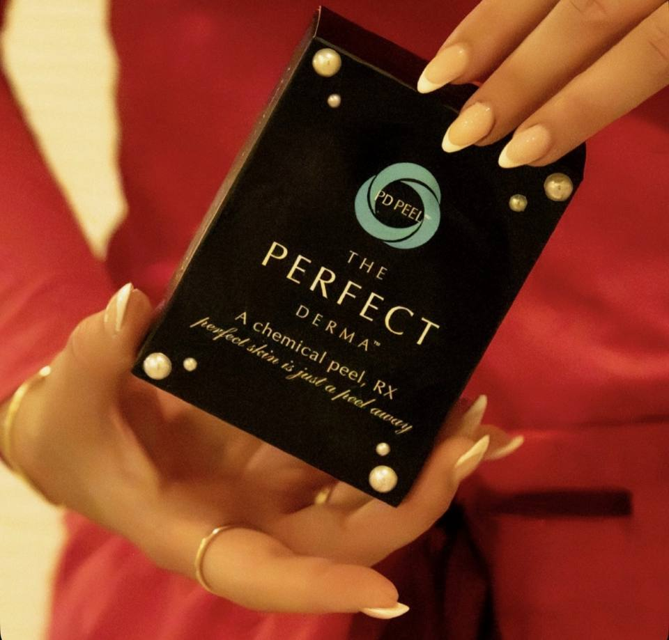
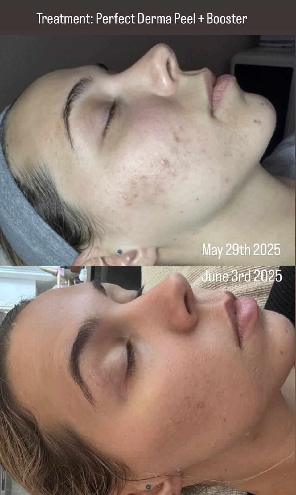

Draft for Katrina’s review. Not published.
The ABK JournalChemical peels in Charlotte: BioRePeel vs The Perfect Derma Peel
Compare chemical peels in Charlotte at ABK SKIN: BioRePeel, The Perfect Derma Peel and the Hydra-Peel. Downtime, results, price and aftercare.
From the ABK SKIN studio
Charlotte, NC · Updated

A chemical peel can do things a regular facial cannot. By renewing the skin's surface, a professional peel can improve the appearance of uneven tone, dark spots, rough texture, post-acne marks and fine lines. But peels are not all the same. Some leave you with barely any visible flaking, while others peel for days.
ABK SKIN in Charlotte offers three peel options: the BioRePeel Brightening Facial, The Perfect Derma Peel and the ABK Hydra-Peel, which layers a customized peel over a Platinum HydraFacial. This guide compares them so you can pick the right peel for your skin, your schedule and your goals.

In short
- BioRePeel ($295, 60 min): brightening and smoothing with minimal visible peeling. ABK SKIN recommends a series of 3 to 4 sessions, 10 to 14 days apart.
- The Perfect Derma Peel ($295, 60 min): a true chemical peel for pigmentation, sun damage, texture and post-acne marks. Peeling can last up to 7 days.
- ABK Hydra-Peel ($395, 90 min): a Platinum HydraFacial plus a customized peel. Book it one to two weeks before an event.
- Sunscreen is not optional after any peel. Daily SPF protects your results.
- Not sure? Book a consultation and your aesthetician will match the peel to your skin.
What a chemical peel does
A chemical peel applies a professional exfoliating solution to the skin. It loosens and removes older surface cells so newer skin is revealed. Depending on the formula and strength, a peel can help improve the appearance of:
- Dullness and uneven tone
- Dark spots and hyperpigmentation
- Rough texture
- Acne and post-acne marks
- Fine lines
The deeper or stronger the peel, the more visible peeling and downtime you can expect. That is the main trade-off to understand.
BioRePeel vs The Perfect Derma Peel at a glance
| BioRePeel Brightening Facial | The Perfect Derma Peel | ABK Hydra-Peel | |
|---|---|---|---|
| Price | $295 | $295 | $395 |
| Time | 60 min | 60 min | 90 min |
| Visible peeling | Minimal | Can last up to 7 days | Depends on the peel chosen |
| Typical plan | Series of 3 to 4, 10 to 14 days apart | Often a single treatment, repeated as advised | Single treatment, often before events |
| Best for | Dullness, uneven tone, congestion, acne, post-acne marks | Pigmentation, sun damage, texture, fine lines, post-acne marks | Event prep, dullness, texture |
| Good if you | Cannot take time off | Can plan around a week of peeling | Want a HydraFacial and a peel in one visit |
Prices come from the ABK SKIN booking menu. The booking page shows the current price before you confirm.
BioRePeel: the low-downtime peel
BioRePeel is a peel-style treatment designed to exfoliate and renew the skin's surface without the prolonged peeling of a traditional chemical peel. It can help improve the appearance of dullness, uneven tone, rough texture, acne and post-acne marks, and fine lines.
Why it's popular
- Minimal visible peeling compared with traditional peels
- Easy to fit into a work week
- Builds results over a series
The BioRePeel series
ABK SKIN recommends three to four BioRePeel treatments spaced 10 to 14 days apart, followed by a maintenance plan built around your skin. A series lets results build without the downtime of one stronger peel.
BioRePeel is also one of the monthly premium options in ABK SKIN CLUB, which is $199 a month with a 3-month minimum.
The Perfect Derma Peel: the true peel
The Perfect Derma Peel is an advanced chemical peel with real downtime. It deeply exfoliates and renews the skin, and it is chosen for uneven tone and pigmentation, sun damage, rough texture, fine lines and wrinkles, acne and post-acne marks.
What to expect
- The treatment takes about 60 minutes.
- You go home with written post-treatment instructions and post-treatment skincare.
- Every client responds differently, and peeling can continue for up to seven days.
Plan around the peel
Because visible peeling can last up to a week, avoid booking The Perfect Derma Peel right before a wedding, a photo shoot or a beach trip. Pick a quieter week, and give yourself time before any big event.
ABK Hydra-Peel: HydraFacial plus a peel
The ABK Hydra-Peel is Katrina's signature facial. It combines a Platinum HydraFacial with a chemical peel chosen for your skin, layered to cleanse, exfoliate, refine, hydrate and brighten in one appointment. It takes about 90 minutes and costs $395.
ABK SKIN recommends the Hydra-Peel before special occasions, booked one to two weeks ahead so your skin has time to settle. Downtime depends on the peel selected, so ask at booking if you have an event date. The event facial timing guide covers the full timeline.
Which chemical peel is best for you?
For dark spots and uneven tone
Both peels can help. If you want minimal downtime, choose a BioRePeel series. If you can plan around a week of peeling, The Perfect Derma Peel is the stronger option. Read the full hyperpigmentation guide.
For acne and post-acne marks
BioRePeel is a good fit for active congestion and marks, especially as a series. The Perfect Derma Peel is also chosen for acne and post-acne marks. For an overall approach, read why acne needs a treatment plan.
For texture and fine lines
The Perfect Derma Peel addresses texture and fine lines. For deeper texture and acne scarring, ask about Microneedling, which works in a different way.
For a glow before an event
The ABK Hydra-Peel, one to two weeks ahead.
How to prepare for a chemical peel
- Tell your aesthetician about retinoids, exfoliating acids, prescription skincare, recent waxing or laser, and any history of cold sores.
- Pause strong actives if your aesthetician asks you to. Follow their timing.
- Protect your skin from sun in the days before your peel.
- Arrive with clean skin if you can.
- If you are pregnant or breastfeeding, say so when you book and check with your doctor before any peel.
Chemical peel aftercare
Good aftercare protects your results and keeps you comfortable.
| Do | Avoid |
|---|---|
| Follow your written instructions exactly | Picking or pulling at peeling skin |
| Cleanse gently and moisturize | Scrubs, acids and retinoids until cleared |
| Use soothing, hydrating products such as the Restorative Post Procedure Kit | Hot yoga, saunas and heavy sweating in the first days |
| Wear mineral sunscreen daily, such as Intellishade TruPhysical Clear | Unprotected sun exposure |
| Mist with Hyacyn Active if skin feels warm | Starting new products without checking first |
The Restorative Post Procedure Kit pairs Hyacyn Active, a hypochlorous acid treatment spray, with Restorative HA Serum. It costs $160 in the ABK SKIN shop.
The takeaway
The best chemical peel in Charlotte for you depends on how much downtime you can take. BioRePeel brightens and smooths with minimal visible peeling over a short series. The Perfect Derma Peel is a true peel with up to a week of peeling and stronger correction. The ABK Hydra-Peel pairs a HydraFacial with a peel for event-ready skin. If you are torn, book a consultation or compare all chemical peels.
Frequently asked questions
How much is a chemical peel in Charlotte?
At ABK SKIN, the BioRePeel Brightening Facial and The Perfect Derma Peel are each $295. The ABK Hydra-Peel, which includes a Platinum HydraFacial, is $395.
Which chemical peel has the least downtime?
BioRePeel. It is designed to keep visible peeling to a minimum compared with traditional peels.
How long does peeling last after The Perfect Derma Peel?
Every client responds differently, and peeling can continue for up to seven days.
How many BioRePeel treatments do I need?
ABK SKIN recommends a series of three to four treatments spaced 10 to 14 days apart, followed by a maintenance plan.
Can I get a chemical peel before my wedding?
Yes, with the right timing. The ABK Hydra-Peel is recommended one to two weeks before an event. Avoid booking The Perfect Derma Peel close to the date because of its peeling time.
Are chemical peels safe for darker skin tones?
Many peels can be used on a range of skin tones, but the choice and strength matter. Book a consultation so your aesthetician can recommend the right option for your skin.
Do chemical peels help acne scars?
Peels can improve the appearance of post-acne marks and texture. Deeper acne scarring often responds better to microneedling, so ask at your consultation.
What should I put on my skin after a peel?
Follow your written instructions. Gentle cleansing, hydration, a soothing spray and daily mineral sunscreen are the basics.
Questions about your skin?
Email abkskinn@gmail.com or bring them to your next appointment.